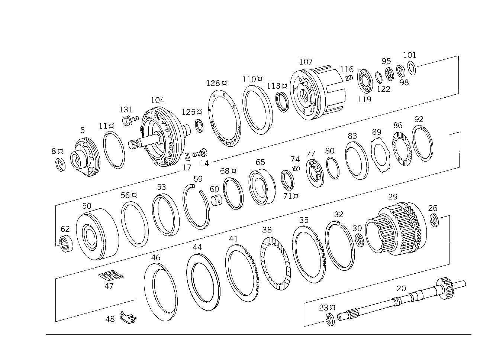

| № | Артикул | Название | Кол. | Примечание | Ограничение |
|---|---|---|---|---|---|
| 5 | A 722 270 00 97 | - МАСЛЯНЫЙ НАСОС | - | ||
| 5 | A 460 270 00 97 | - МАСЛЯНЫЙ НАСОС | - | ||
| 5 | A 126 270 05 97 | - МАСЛЯНЫЙ НАСОС | - | ||
| 5 | A 140 270 00 97 | - Масляный насос | 1 | ПЕРВИЧ.НАСОС | |
| 8 | A 010 997 49 47 | - УПЛОТНИТ. КОЛЬЦО | 1 | ||
| 8 | A 010 997 48 47 | - Уплотнительное кольцо | 1 | ||
| 8 | A 010 997 50 47 | - УПЛОТНИТ. КОЛЬЦО | 1 | ||
| 8 | A 010 997 47 47 | - УПЛОТНИТ. КОЛЬЦО | 1 | ||
| 8 | A 018 997 04 47 | - Уплотнительное кольцо | 1 | ||
| 11 | A 005 997 91 48 | - Уплотнительное кольцо | - | ||
| 11 | A 016 997 14 48 | - Кольцевая прокладка | 1 | ||
| 14 | N 000933 008168 | - Винт | 6 | КОРПУС НАСОСА НА КРЫШКЕ | |
| 17 | N 000137 008204 | - Пружинная шайба | 6 | КОРПУС НАСОСА НА КРЫШКЕ | |
| 20 | A 126 270 05 25 | - Приводной вал | 1 | ||
| 23 | A 126 272 00 55 | - Уплотнительное кольцо | 1 | ПРИВОДНОЙ ВАЛ | |
| 26 | A 007 981 99 10 | - Игольчатый подшипник | 1 | ОСЕВОЙ | |
| 29 | A 126 270 04 43 | - ВОДИЛО ПЛАНЕТ. ПЕРЕДАЧИ | - | [020] FIRST EXHAUST STOCK OF OLD PARTS UP TO TRANSMISSION 894132 | |
| 29 | A 126 270 41 43 | - Водило планет. передачи | 1 | СПЕРЕДИ | |
| 30 | A 007 981 99 10 | - Игольчатый подшипник | 1 | ОСЕВОЙ | |
| 32 | A 126 272 01 73 | - предохранитель | 1 | ||
| 35 | A 126 272 37 26 | - ФРИКЦ. ДИСК НАРУЖНЫЙ | - | [038] EXHAUST STOCK OF OLD PARTS NUMBER FIRST UP TO TRANSMISSION 3 012799 | |
| 35 | A 126 272 69 26 | - Концевая пластина | 1 | ПЕРЕДАЧА ЗАДНЕГО ХОДА 7.7 MM | |
| 38 | A 126 272 09 25 | - Внутренняя пластина | 4 | ПЕРЕДАЧА ЗАДНЕГО ХОДА 2.1 MM | |
| 41 | A 126 272 39 26 | - ФРИКЦ. ДИСК НАРУЖНЫЙ | - | [038] EXHAUST STOCK OF OLD PARTS NUMBER FIRST UP TO TRANSMISSION 3 012799 | |
| 41 | A 126 272 67 26 | - Наружный диск | 3 | ПО НЕОБХОДИМОСТИ 2.3 MM | |
| 41 | A 126 272 38 26 | - ФРИКЦ. ДИСК НАРУЖНЫЙ | - | [038] EXHAUST STOCK OF OLD PARTS NUMBER FIRST UP TO TRANSMISSION 3 012799 | |
| 41 | A 126 272 68 26 | - Наружный диск | 3 | ПО НЕОБХОДИМОСТИ 2.8 MM | |
| 41 | A 126 272 38 26 | - ФРИКЦ. ДИСК НАРУЖНЫЙ | - | ||
| 41 | A 126 272 68 26 | - Наружный диск | 1 | ПО НЕОБХОДИМОСТИ 2.8 MM | |
| 41 | A 126 272 64 26 | - Наружный диск | 1 | ПО НЕОБХОДИМОСТИ 3.3 MM | |
| 41 | A 126 272 65 26 | - Наружный диск | 1 | ПО НЕОБХОДИМОСТИ 3.8 MM | |
| 44 | A 126 272 09 52 | - Дистанционная шайба | 1 | ПО НЕОБХОДИМОСТИ 2.5mm | |
| 44 | A 126 272 10 52 | - Дистанционная шайба | 1 | ПО НЕОБХОДИМОСТИ 3.0 MM | |
| 44 | A 126 272 11 52 | - Дистанционная шайба | 1 | ПО НЕОБХОДИМОСТИ 3.5 MM | |
| 46 | A 126 993 18 26 | - ПРУЖИНА ДИСКОВАЯ | - | [096] ИСПОЛЬЗОВАТЬ СТАРЫЙ НОМЕР ДЕТАЛИ ПО КП 3 991610 | |
| 46 | A 140 993 15 26 | - Тарельчатая пружина | 1 | ПЕРЕДАЧА ЗАДНЕГО ХОДА | |
| 47 | A 126 993 04 15 | - пружина | 1 | ПЕРЕДАЧА ЗАДНЕГО ХОДА | |
| 50 | A 126 270 76 28 | - Обойма фрикционных дисков | 1 | МУФТА K 1 | |
| 60 | A 126 272 09 50 | - втулка | 1 | СОЛНЕЧНАЯ ШЕСТЕРНЯ | |
| 62 | A 008 981 38 10 | - Игольчатый подшипник | - | ||
| 62 | A 013 981 74 10 | - Игольчатый подшипник | - | ||
| 62 | A 013 981 94 10 | - Игольчатый подшипник | 1 | ||
| 65 | A 126 272 11 31 | - Поршень | 1 | МУФТА K 1 [402] БОЛЬШЕ НЕ ПОСТАВЛЯЕТСЯ | |
| 68 | A 109 272 09 92 | - Уплотнительное кольцо | 1 | СНАРУЖИ | |
| 71 | A 126 272 03 92 | - Манжета | 1 | ВНУТР. | |
| 74 | A 126 993 70 02 | - пружина | 24 | МУФТА K 1 | |
| 77 | A 126 272 00 64 | - ТАРЕЛКА ПРУЖИНЫ КЛАПАНА | - | ||
| 77 | A 126 272 10 64 | - Тарелка пружины | 1 | МУФТА K 1 | |
| 80 | A 126 994 06 35 | - Пруж. стопорное кольцо | 1 | МУФТА K 1 | |
| 83 | A 126 993 10 26 | - ПРУЖИНА ДИСКОВАЯ | - | ||
| 83 | A 126 993 17 26 | - Тарельчатая пружина | 1 | МУФТА K 1 | |
| 86 | A 126 272 06 25 | - Внутренняя пластина | 5 | МУФТА K 1 2.14 MM | |
| 89 | A 126 272 49 26 | - Наружный диск | 1 | МУФТА K 1 2.0 MM | |
| 89 | A 126 272 50 26 | - Наружный диск | 4 | ПО НЕОБХОДИМОСТИ 3.5 MM | |
| 89 | A 126 272 51 26 | - Наружный диск | 4 | ПО НЕОБХОДИМОСТИ 4.0 MM | |
| 89 | A 126 272 32 26 | - Наружный диск | 1 | МУФТА K 1 4.5 MM | |
| 92 | A 126 994 05 34 | - Пруж. стопорное кольцо | 1 | ПО НЕОБХОДИМОСТИ 2.0 MM | |
| 92 | A 126 994 06 34 | - Пруж. стопорное кольцо | 1 | ПО НЕОБХОДИМОСТИ 2.5mm | |
| 92 | A 126 994 07 34 | - Пруж. стопорное кольцо | 1 | ПО НЕОБХОДИМОСТИ 3.0 MM | |
| 95 | A 007 981 68 10 | - Игольчатый подшипник | 1 | ||
| 98 | A 000 272 25 62 | - Упорная шайба | 1 | ||
| 101 | A 126 272 05 52 | - Дистанционная шайба | NB | ПО НЕОБХОДИМОСТИ 0.1 MM | |
| 101 | A 126 272 06 52 | - Дистанционная шайба | NB | ПО НЕОБХОДИМОСТИ 0.2 MM | |
| 101 | A 126 272 07 52 | - Дистанционная шайба | NB | ПО НЕОБХОДИМОСТИ 0.5mm | |
| 104 | A 126 270 47 05 | - Крышка | 1 | СПЕРЕДИ | |
| 104 | A 126 270 71 05 | - Крышка | 1 | СПЕРЕДИ | |
| 107 | A 126 272 09 31 | - Поршень | 1 | ПЕРЕДАЧА ЗАДНЕГО ХОДА | |
| 107 | A 126 272 22 31 | - Поршень | 1 | ПЕРЕДАЧА ЗАДНЕГО ХОДА | |
| 110 | A 126 272 01 92 | - Манжета | 1 | СНАРУЖИ | |
| 113 | A 126 272 00 92 | - Манжета | 1 | ВНУТР. | |
| 116 | A 100 993 04 02 | - пружина | 20 | ПЕРЕДАЧА ЗАДНЕГО ХОДА | |
| 116 | A 126 993 27 02 | - Нажимная пружина | 20 | ПЕРЕДАЧА ЗАДНЕГО ХОДА | |
| 119 | A 126 272 03 64 | - Тарелка пружины | 1 | ПЕРЕДАЧА ЗАДНЕГО ХОДА | |
| 122 | A 126 994 04 35 | - Пруж. стопорное кольцо | 1 | ПЕРЕДАЧА ЗАДНЕГО ХОДА | |
| 125 | A 126 272 03 55 | - УПЛОТНИТ. КОЛЬЦО | - | ||
| 125 | A 126 272 09 55 | - Уплотнительное кольцо | 2 | КРЫШКА ПЕРЕДНЯЯ | |
| 128 | A 126 271 00 80 | - ПРОКЛАДКА УПЛОТНИТЕЛЬНАЯ | - | ||
| 128 | A 126 271 12 80 | - Уплотнение | 1 | КРЫШКА ПЕРЕДНЯЯ | |
| 131 | N 914005 008029 | - Винт с неспадающей шайбой | 9 | КРЫШКА К КАРТЕРУ КП | |
| 134 | A 126 270 12 43 | - ВОДИЛО ПЛАНЕТ. ПЕРЕДАЧИ | - | ||
| 134 | A 126 270 40 43 | - Водило планет. передачи | - | ||
| 134 | A 126 270 17 43 | - Водило планет. передачи | 1 | СЗАДИ | |
| 137 | A 008 981 00 10 | - Игольчатый подшипник | 1 | ||
| 140 | A 007 981 57 10 | - Игольчатый подшипник | 2 | ОСЕВОЙ | |
| 143 | A 126 272 00 07 | - Солнечная шестерня | 1 | ||
| 146 | A 126 270 32 31 | - ОБГОННАЯ МУФТА | - | [065] ИСПОЛЬЗОВАТЬ СТАРЫЙ НОМЕР ДЕТАЛИ ПО КП 3 319999 | |
| 146 | A 126 270 51 31 | - Муфта свободного хода | 1 | С ОБОЙМОЙ ВНУТР. ФРИКЦ. ДИСКОВ K 2 | |
| 149 | A 126 270 00 76 | - Диск | 1 | ОБГОННАЯ МУФТА K 2 | |
| 152 | A 126 272 13 62 | - УПОРНАЯ ШАЙБА | - | ||
| 152 | A 126 272 30 62 | - Прижимная шайба | 1 | K2 | |
| 155 | A 126 270 50 28 | - Обойма фрикционных дисков | 1 | K2 | |
| 158 | A 009 997 61 48 | - УПЛОТНИТ. КОЛЬЦО | 1 | НАРУЖН. КОЛЬЦО СВОБОДН. ХОД | |
| 161 | A 009 997 60 48 | - Уплотнительное кольцо | 1 | НАРУЖН. КОЛЬЦО СВОБОДН. ХОД | |
| 161 | A 007 997 33 48 | - Уплотнительное кольцо | 1 | НАРУЖН. КОЛЬЦО СВОБОДН. ХОД | |
| 164 | A 126 272 17 62 | - Прижимная шайба | 1 | РОЛИК ЦИЛИНДРА | |
| 167 | A 126 272 10 08 | - ОПОРА СОЕДИНИТЕЛЬНАЯ | 1 | ||
| 170 | A 126 272 17 52 | - Дистанционная шайба | 1 | ПО НЕОБХОДИМОСТИ 0.1 MM | |
| 170 | A 126 272 18 52 | - Дистанционная шайба | 1 | ПО НЕОБХОДИМОСТИ 0.2 MM | |
| 170 | A 126 272 19 52 | - Дистанционная шайба | 1 | ПО НЕОБХОДИМОСТИ 0.5mm | |
| 173 | A 126 272 01 73 | - предохранитель | 1 | СОЕДИНИТ. КРОНШТ. | |
| 176 | A 126 270 89 28 | - ОБОЙМА ФРИКЦ. ДИСКОВ | - | ||
| 176 | A 140 270 15 28 | - Обойма фрикционных дисков | 1 | МУФТА K 2 | |
| 179 | A 008 981 38 10 | - Игольчатый подшипник | - | ||
| 179 | A 013 981 94 10 | - Игольчатый подшипник | 1 | МУФТА K 2 | |
| 182 | A 126 272 12 31 | - Поршень | 1 | МУФТА K 2 | |
| 185 | A 126 272 02 55 | - Уплотнительное кольцо | 1 | СНАРУЖИ | |
| 188 | A 126 272 03 92 | - Манжета | 1 | ВНУТР. | |
| 191 | A 126 993 07 03 | - пружина | 24 | МУФТА K 2 | |
| 194 | A 126 272 02 64 | - ТАРЕЛКА ПРУЖИНЫ КЛАПАНА | - | ||
| 194 | A 140 272 00 64 | - Тарелка пружины | 1 | МУФТА K 2 | |
| 197 | A 126 994 06 35 | - Пруж. стопорное кольцо | 1 | МУФТА K 2 | |
| 200 | A 126 272 07 25 | - Внутренняя пластина | 5 | МУФТА K 2 2.14 MM | |
| 203 | A 126 272 47 26 | - Наружный диск | 1 | МУФТА K 2 2.0 MM | |
| 206 | A 126 272 36 26 | - Наружный диск | 4 | ПО НЕОБХОДИМОСТИ 3.0 MM | |
| 206 | A 126 272 48 26 | - Наружный диск | 4 | ПО НЕОБХОДИМОСТИ 3.5 MM | |
| 209 | A 126 272 34 26 | - Наружный диск | 1 | МУФТА K 2 4.5 MM | |
| 212 | A 126 272 02 73 | - Пруж. стопорное кольцо | 1 | ПО НЕОБХОДИМОСТИ 2.0 MM | |
| 212 | A 126 994 03 34 | - Пруж. стопорное кольцо | 1 | ПО НЕОБХОДИМОСТИ 2.5mm | |
| 212 | A 126 994 04 34 | - Пруж. стопорное кольцо | 1 | ПО НЕОБХОДИМОСТИ 3.0 MM | |
| 215 | A 126 272 22 62 | - Прижимная шайба | 1 | ФЛАНЕЦ K2 | |
| 218 | A 126 272 26 45 | - Фланец | - | ||
| 218 | A 140 272 03 45 | - Фланец | 1 | МУФТА K 2 | |
| 221 | A 006 997 75 48 | - Уплотнительное кольцо | - | D=36.5 MM | |
| 221 | A 020 997 04 48 | - Кольцевая прокладка | 1 | ФЛАНЕЦ K2 | |
| 224 | A 126 272 03 55 | - УПЛОТНИТ. КОЛЬЦО | - | ||
| 224 | A 126 272 09 55 | - Уплотнительное кольцо | 2 | ФЛАНЕЦ K2 |
Позиций: 126 · подписано на схемах: 126 · колесо — плавный зум в курсор, перетаскивание — пан, двойной клик — зум, клик по артикулу — скопировать.